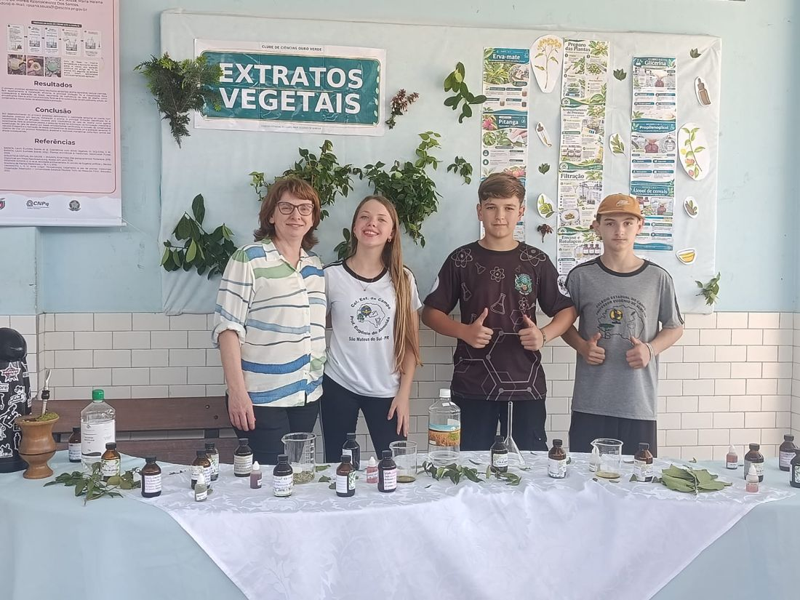
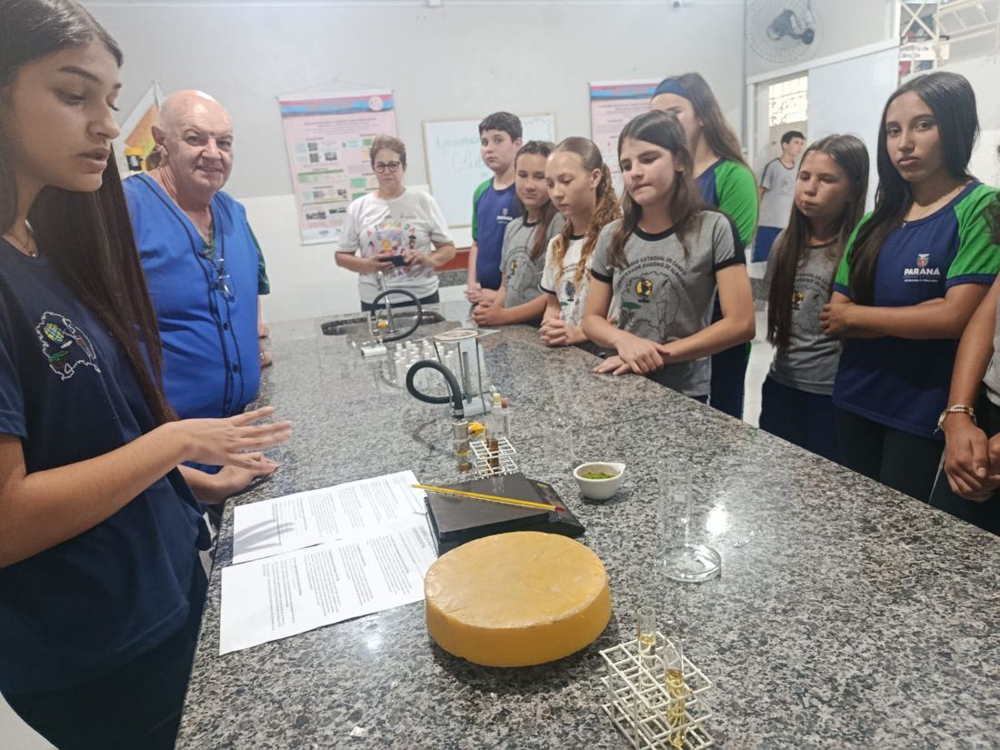
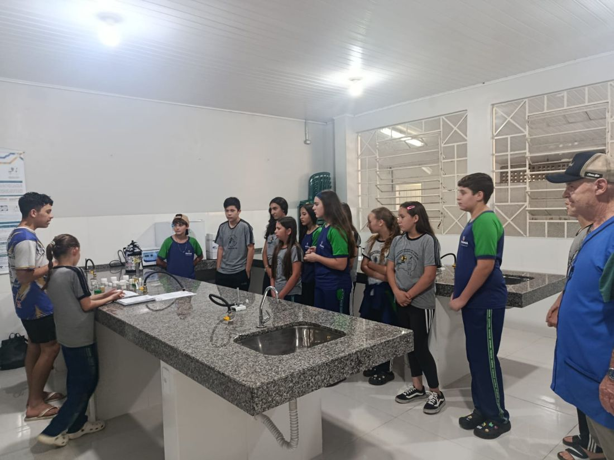
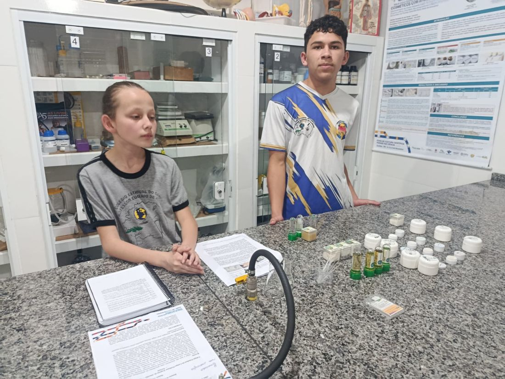
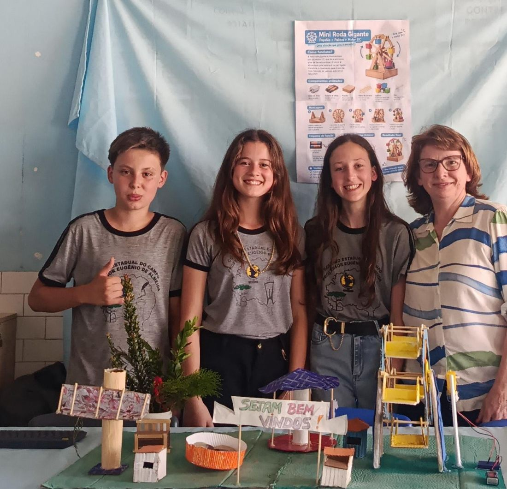

Notícia · [CONFERIR: data]
Clube participa do Eugênios Day
O Clube de Ciências Ouro Verde participou da última etapa do Eugênios Day, os dias de exposição científica do Colégio Estadual do Campo Professor Eugênio de Almeida.
Durante a exposição, estudantes de outras turmas, professores, pais e estudantes da Escola Apolônia [CONFERIR: nome completo da escola] conheceram os trabalhos do Clube.
No estande, os clubistas mostraram os extratos vegetais de erva-mate, pitanga e outras plantas, com os painéis sobre cada etapa do preparo. No laboratório, apresentaram aos visitantes o balm labial e os cosméticos com ativos regionais, explicando os ingredientes e como cada produto é feito.



